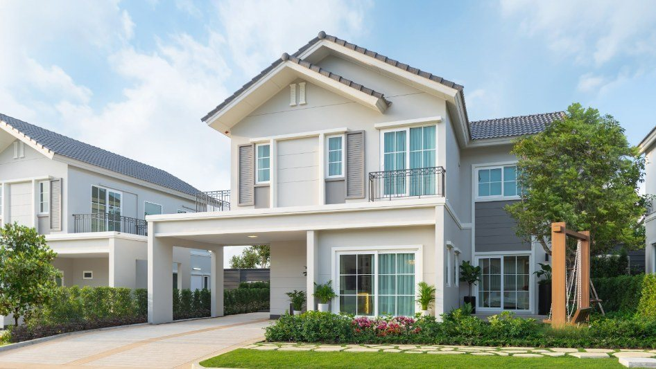
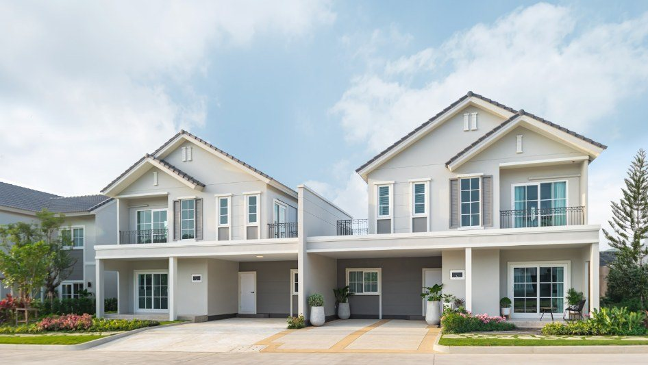
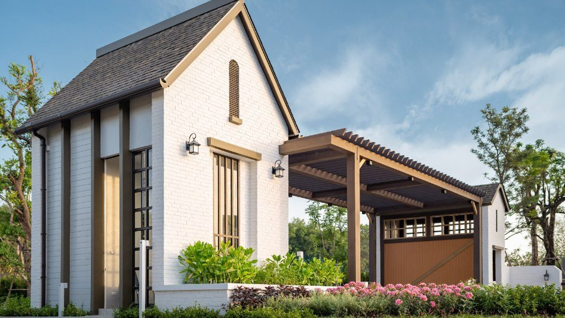
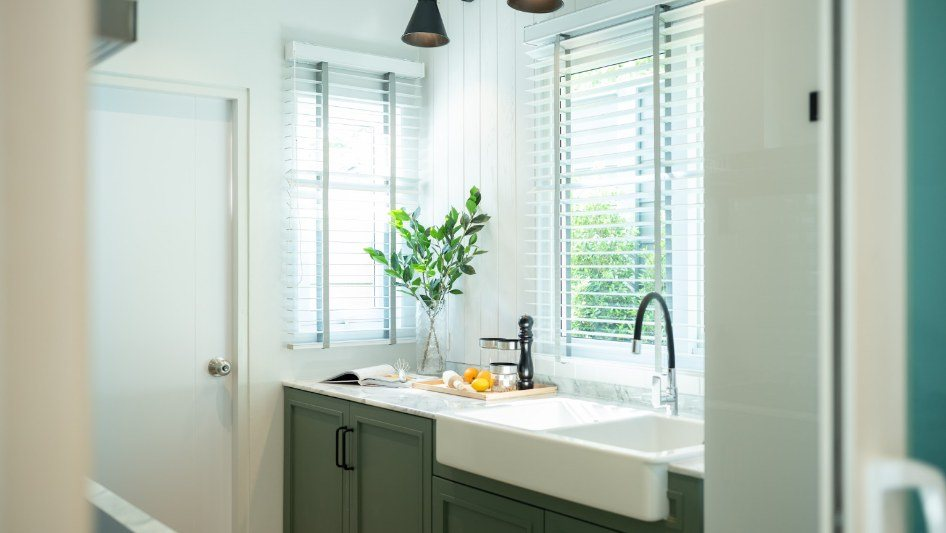

Коротко
Anasiri Paklok в цифрах
О проекте
Что это за место
Anasiri Paklok — закрытый посёлок на 20 гектарах: солевой бассейн, фитнес, большой сад, развивающая детская площадка, охрана 24/7 с системой LIV-24.
Три типа домов: Quinoa 148 м² (участок 140 м²), Barley 166 м² и Millet 186 м² (участок 200 м²). Во всех — 4 спальни, 3 ванные, тайская кухня и 2–3 парковочных места.
Рядом Ao Po Grand Marina, пляж Найтон, Thalang, школы BIS и UWC — 8–18 км.




Цены
Что есть в продаже
Для иностранцев — Leasehold (аренда земли на 30 лет). Цены — стартовые «от» по открытым данным Sansiri и партнёров; актуальный прайс и свободные квартиры пришлю по запросу. Курс: 1 ฿ ≈ 2,6 ₽. Наличие меняется — пришлю актуальный прайс.
Застройщик
Sansiri · с 1984 года
Один из крупнейших застройщиков Таиланда, акции на бирже SET с 1996 года.
Вилла в лизхолде у застройщика-компании — это не аренда у частного лица: компании невыгодно рисковать репутацией и будущими продажами. Лизхолд без страха →
Аренда
Сколько приносит
Таланг · Си Сунтон · север. Дом для жизни: чаще всего его сдают семьям на год. Доход посчитаю по реальным домам рядом.
По данным Airbnb, ноябрь 2026: цены ~1 300 вилл с бассейном на 3–4 спальни на сезон 2026/27, отзывы гостей за год и брони. «Сдаёте активно» — как хорошие виллы рядом: в сезон занято 80% ночей, вне сезона 40–55%. Расходы вычтены: сборы площадки, уборка, бассейн и сад, коммунальные, обслуживание, мелкий ремонт. Налог не вычтен.
Условия покупки
График оплаты
Дома готовы — оплата одной суммой.
Расходы
Что ещё учесть
Локация